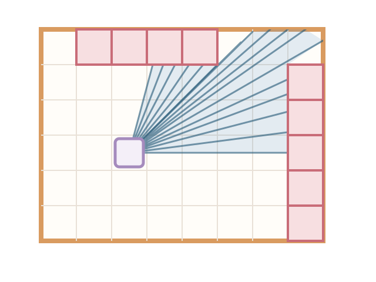
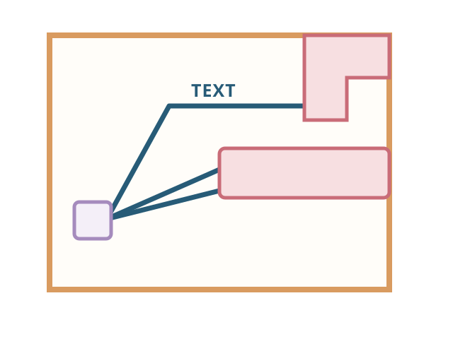
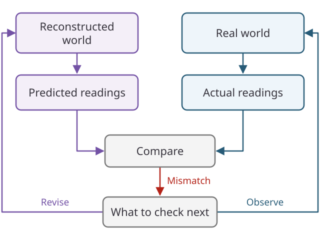

2026-11-15
Look out the window and point at the sky. Go on, point somewhere and with your eyes trace a line upwards. Beyond that horizon, an intercontinental ballistic missile is arcing your way. At least, that’s what the screen inside your bunker says: the Americans have launched. Your name is Petrov, Lieutenant Colonel of Soviet Air Defence Forces. A siren howls with utmost urgency.
13 – Your heart pounds. The sirens seem to recede into a muffled blur as you reason that the early warning system must be mistaken. else – You panic. You freeze up. You cannot muster the courage to even blink.
In reality, Petrov didn’t freeze. He reported his assessment that the warning was false. The alarm cleared, and no retaliatory strike followed.
This happened on September 26, 1983.
“the [early warning] satellite had been fooled by the sun’s rays reflecting off clouds high over North Dakota, which had two launch areas” Source: The Economist, “Midnight and counting” (30 September 2017)
Petrov rolled a natural 20 that day.
Some of his doubts were logical: the newness of the system, and the too-swift passage of the message through the 30 layers of verification he had set up himself. Other doubts were vaguer: a funny gut feeling, and a sense that he knew better than a machine. Even so, his decision to declare a false alarm was a 50-50 guess, no better. Source: The Economist, “Midnight and counting” (30 September 2017)
Did the sensors betray us? Were the machines immoral? Should the Soviets have invested in model alignment? No, the satellite did its job and it wasn’t misaligned. It just had no model of the world. Safe agentic behavior is on everyone’s mind nowadays, yet we often conflate alignment with basic epistemics. Funny enough, nearly four months before the Soviet nuclear false alarm, the movie WarGames hit theaters in June 1983 with an uncannily similar premise.
In both Petrov’s case and the movie, humans played a critical role as guardrails for their automated systems.
During the week of WarGames’ wide release, Ulf Grenander presented “Reflections on Global Tendencies in Mathematics” at a conference in Lund called An Inventory of Present Thinking about Parts and Wholes. After all, computers were changing mathematical practice rapidly around this time. Wait, since Math 2.0 is taken, let’s call his take Math 1.5.
Petrov’s false alarm took place in September, months after Grenander’s June presentation, and details of the incident did not become public until the 1990s. Much of Grenander’s mathematical framework, developed during the Cold War, centered on probabilistic pattern representations and inference from signals. These ideas also offer a useful lens for thinking about early-warning systems. One powerful idea is that pattern analysis and pattern synthesis should share a common probabilistic model.
Pattern analysis = Pattern synthesis. (Attributed to Grenander (1983, §5.3) in “Bayesian Computation and Stochastic Systems”)
Bottom-up signals from sensors may fire an alert warning Petrov of incoming missiles, first one and then four more.
Top-down understanding is the process of synthesizing or simulating a world that could produce those signals, and comparing those synthetic predictions against the observed readings:
To understand a signal, model what could have produced it. Grenander’s compositional and probabilistic framework for representing hidden structures and inferring them from noisy observations was called Pattern Theory.
Whatever happened to Pattern Theory? Six weeks earlier in 1983 gives a clue.

Six weeks before the Lund conference and WarGames’ wide release, Munich hosted the 28th edition of the Eurovision Song Contest.
Corinne Hermès stunned us with her song “Si la vie est cadeau”, representing Luxembourg and winning 1st place.
She sings:
Cadeau donné, cadeau repris, cadeau volé
It translates to “a gift given, a gift taken back, a gift stolen.”
In fact, in her later interviews after the competition, Hermès does not explicitly say that Grenander’s Pattern Theory was the gift.
But that’s how I read it. Three years later, Rumelhart, Hinton, and Williams popularized backpropagation, and the field went all-in on training neural networks directly from inputs to labels. Grenander was doing the opposite: modeling the generative structure first, then inferring it by sampling. In his 1985 IIASA report, he cast pattern inference as stochastic relaxation, repeatedly resampling local parts of a pattern in a Markov chain (alongside Stuart and Donald Geman’s Gibbs sampling at Brown), and later developed jump-diffusion with Michael Miller. As hardware scaled, end-to-end curve fitting won out, and Pattern Theory faded into the background.
Maybe it’s cliche now, but you may have heard the phrase “the map is not the territory.” To me, it means the patterns we analyze and the signals our sensors capture are only projections of reality, not to be confused with reality itself.
I think that’s what Hermès gets at a few bars earlier when she sings:
Alors pourquoi m’avoir promis la terre entière? … Je ne voulais pas d’un bonheur imaginaire.
“So why did you promise me the whole world? … I didn’t want an imaginary happiness.”
To which Claude responds, “That was an honest mistake, and you’re right to push back on that.”
When you push back on an LLM, it rewrites its answer rather than checking the world, because it has no world to check. In that sense, an LLM’s output resembles the alert from the Soviet satellite. Petrov had a rich generative model of the world in his head that let him doubt the sensor readings. That loop is called analysis by synthesis, and Pattern Theory was one way to formalize it.
Consider a grid world, where an agent can use optical sensors to measure distance to obstacles.

The blue vision cone represents the measurement of sensor signals: rays cast outward until they hit an obstacle.
In a text-based agent, prompts, tool outputs, and model completions take the place of those distance readings, and the agent treats text as the environment itself.

The LLM is the sensor. I’ve seen related questions raised in a paper that models language as a sensor and in an argument that LLMs do not yet transmit testimonial knowledge. When the sensor becomes the planner, we confuse the signals with reality, mistaking sunlight on clouds for a launch. A trustworthy agentic system shall reconstruct a generative explanation of reality that predicts observations it has never seen.
For example, the agent reconstructs a possible world and predicts the sensor readings that world would produce. It compares those predictions with the real readings, then uses the mismatches to decide what to investigate next.

The agent uses its model to decide what to measure next.
Hermès sang “cadeau donné, cadeau repris, cadeau volé.” I think we still have this gift. We’ve gotten remarkably good at teaching machines to synthesize. Maybe we’re in a better position now to revisit what Grenander wanted to do with that ability: understand.